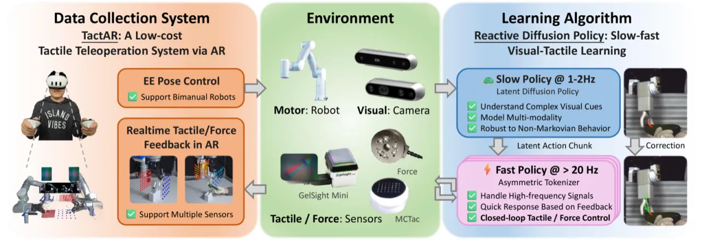
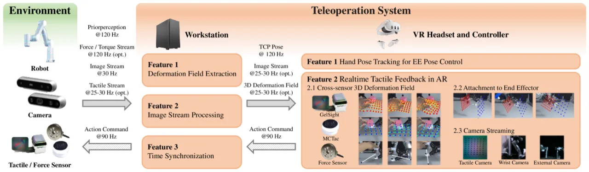
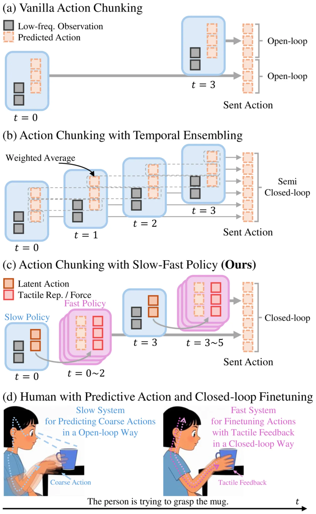
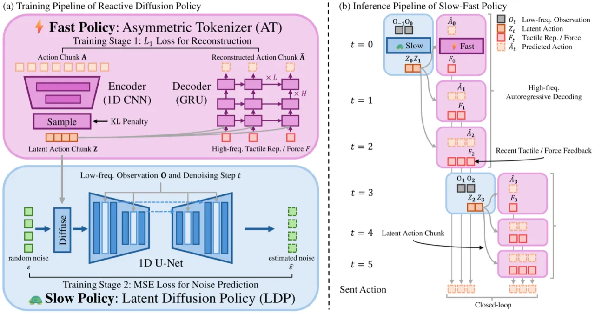
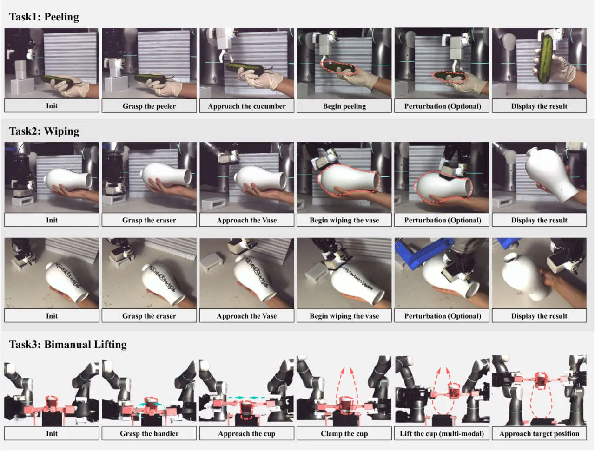
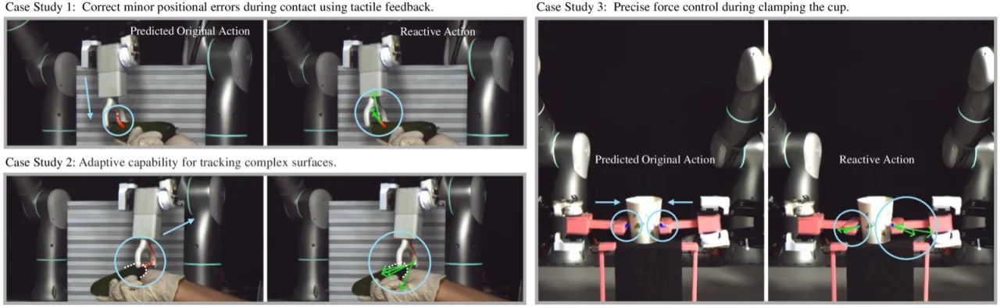

本文提出两项核心贡献：TactAR——一套低成本、通用的遥操作系统，通过增强现实（AR）向操作者提供实时触觉/力反馈；以及 Reactive Diffusion Policy (RDP)——一种 slow-fast 模仿学习算法，以低频 diffusion 策略建模复杂行为轨迹，同时以高频 asymmetric tokenizer 根据触觉反馈进行闭环修正，在 Peeling、Wiping、Bimanual Lifting 三项接触丰富任务上大幅超越纯视觉基线。
人类天然具备视觉与触觉的协同感知能力，能在接触过程中即时做出毫米级精度调整。而现有机器人操作方法面临双重困境：一方面，遥操作系统普遍缺乏精细的触觉/力反馈，导致采集的演示数据质量受限；另一方面，以 action chunking 为代表的视觉模仿学习范式将动作分块执行，形成开环控制，根本上无法在接触过程中即时响应触觉信号。
"Action chunking enables the policy to model complex behaviors but prevents immediate responses to tactile feedback during execution."

本文方法由两个互补模块组成：TactAR 解决数据采集端的触觉反馈缺失问题，RDP 解决策略执行端的闭环响应问题。



触觉表示采用 PCA 对标记形变场进行降维，前四个主成分分别对应切向力（C1, C3）、扭转力矩（C2）和法向力（C4），提供紧凑且物理可解释的触觉编码。
在三项接触丰富的真实机器人任务上评估：Peeling（剥皮）、Wiping（擦拭）和 Bimanual Lifting（双臂抬升）。每项任务设置三种扰动条件：无扰动、接触前扰动、接触后扰动，以评估反应式闭环能力。基线包括原始 Diffusion Policy（DP）以及加入触觉图像/嵌入的 DP 变体。

| 方法 | 无扰动 | 接触前扰动 | 接触后扰动 | 综合得分 |
|---|---|---|---|---|
| DP | 0.56 | 0.58 | 0.19 | 0.44 |
| DP w. tactile img. | 0.60 | 0.49 | 0.16 | 0.41 |
| DP w. tactile emb. | 0.48 | 0.55 | 0.15 | 0.39 |
| RDP (GelSight) | 0.98 | 0.93 | 0.80 | 0.90 |
| RDP (MCTac) | 1.00 | 0.84 | 0.79 | 0.88 |
| RDP (Force) | 0.99 | 0.98 | 0.88 | 0.95 |
| 方法 | 无扰动 | 接触前扰动 | 接触后扰动 | 综合得分 |
|---|---|---|---|---|
| DP | 0.75 | 0.70 | 0.25 | 0.57 |
| DP w. tactile emb. | 0.60 | 0.75 | 0.15 | 0.50 |
| RDP (GelSight) | 0.85 | 0.95 | 0.50 | 0.77 |
| RDP (Force) | 0.95 | 0.85 | 0.80 | 0.87 |
| 方法 | 软杯夹持 | 软杯提升 | 软杯得分 | 硬杯夹持 | 硬杯提升 | 硬杯得分 | 综合得分 |
|---|---|---|---|---|---|---|---|
| DP | 0% | 0% | 0.00 | 0% | 0% | 0.00 | 0.00 |
| DP w. tactile emb. | 10% | 10% | 0.10 | 20% | 10% | 0.05 | 0.08 |
| RDP (GelSight + MCTac) | 100% | 100% | 0.55 | 90% | 80% | 0.40 | 0.48 |
| RDP (Force) | 100% | 90% | 0.80 | 90% | 90% | 0.60 | 0.70 |

消融研究在 Peeling 任务上验证了 slow-fast 设计的必要性。Temporal ensemble 对平滑系数 τ 极度敏感：τ=0.2 时抓取成功率仅 30%，τ=0.5 时降至 0%，τ=0.8 时才达到 100%——而在接触后扰动条件下得分仍仅 0.15，远不及 RDP（GelSight）的 0.50。此外，将 action chunk 大小从 8 缩短至 2 会使抓取成功率从 100% 骤降至 20%，说明慢策略的长程规划能力至关重要。
| 配置 | 抓取成功率 | 接触后扰动得分 |
|---|---|---|
| DP w. tactile emb. (chunk=8) | 100% | 0.15 |
| DP w. tactile emb. (chunk=2) | 20% | 0.10 |
| DP w. temporal ensemble (τ=0.2) | 30% | 0.05 |
| DP w. temporal ensemble (τ=0.5) | 0% | 0.00 |
| DP w. temporal ensemble (τ=0.8) | 100% | 0.15 |
| RDP (GelSight) | 100% | 0.50 |
RDP 在 Peeling 任务上使用三种不同传感器均取得强劲性能：GelSight Mini（综合得分 0.90）、MCTac（0.88）、关节力矩传感器（0.95），验证了 3D 形变场统一表示的跨传感器泛化能力。
TactAR 的 AR 触觉可视化"not as intuitive or efficient as direct human-hand operations"，对新用户仍存在认知负担。
当前系统"designed for two-finger grippers"，无法直接迁移至多指灵巧手或非标准末端执行器，限制了任务多样性。
Fast policy 目前只能接收"high-frequency tactile / force input"，不支持高频视觉流，限制了纯视觉场景下的响应速度。
算法目前"currently restricted to single-task scenarios"，尚未支持多任务或语言条件化泛化，是未来工作的重要方向。